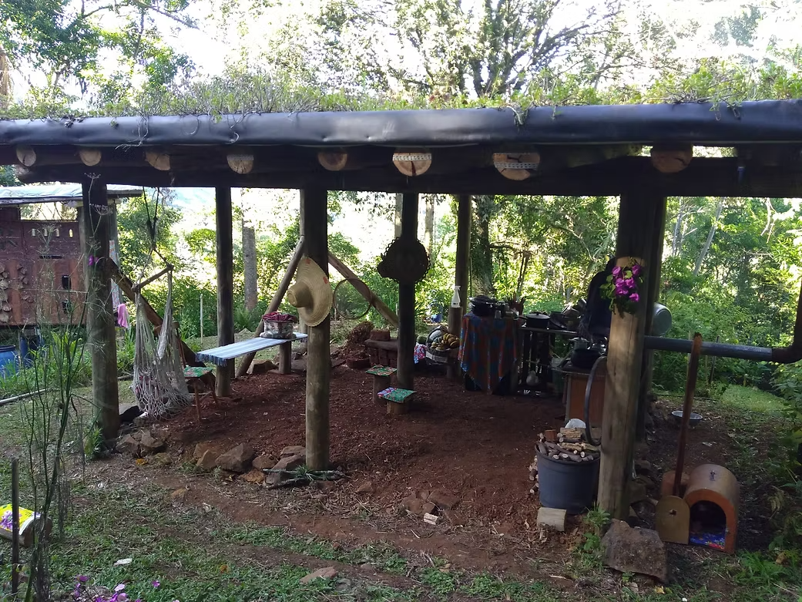
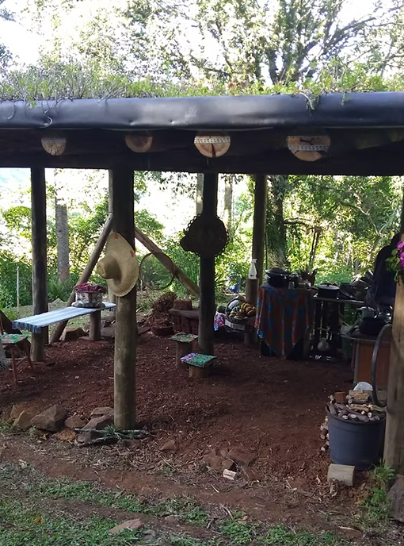
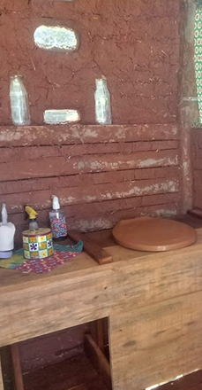
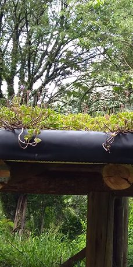
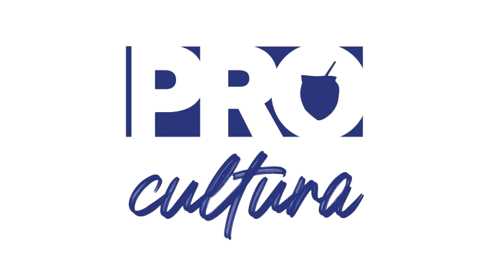
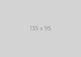

CONHEÇA
IPASG
Impacto socioambiental positivo
Atuamos com projetos regenerativos que preservam a natureza.
CONHEÇA
Atuamos com projetos regenerativos que preservam a natureza.

PROJETOS
Agroecologia, manejo de água e recuperação ambiental.

O IPASG atua como um agente de transformação socioambiental. Nosso trabalho é fundamentado na Permacultura, desenvolvendo soluções que cuidam da terra, cuidam das pessoas e garantem a partilha justa. Abaixo, nossas principais frentes de atuação:
Design de sistemas produtivos sustentáveis, hortas comunitárias e promoção da segurança alimentar local.
Oficinas, cursos e vivências práticas para reconectar crianças e adultos à conservação da natureza.
Tecnologias ecológicas para tratamento natural de resíduos e moradias de baixo impacto ambiental.
Apoio técnico a escolas, associações e comunidades para a implementação de projetos regenerativos.
Conheça algumas das iniciativas práticas e serviços que desenvolvemos aplicando nossas metodologias.

Criação e manejo de abelhas nativas sem ferrão. Uma ferramenta poderosa para polinização e geração de renda.
Saiba mais
Implementação de sistemas como Bacias de Evapotranspiração para o tratamento e reúso seguro da água.
Saiba mais
Uso de terra, bambu e materiais locais para criar estruturas com eficiência térmica e mínimo impacto.
Saiba maisParticipe de nossas oficinas, mutirões e vivências práticas.
Acompanhe as novidades e atualizações do nosso instituto.
Organizações e parceiros que caminham conosco.

